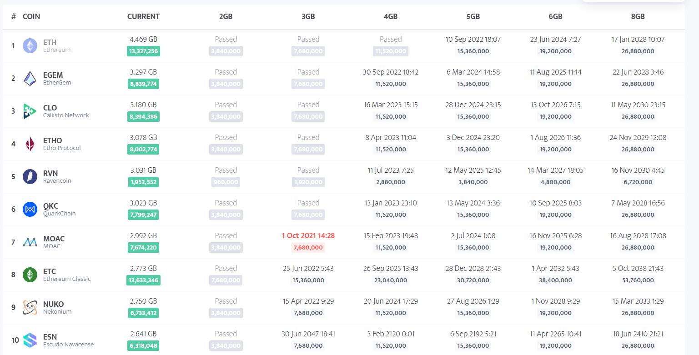
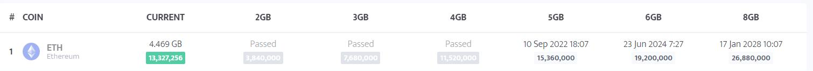
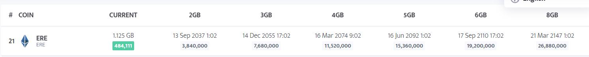

1.Dag size là gì? Tại sao miner cần phải quan tâm?
Cơ chế Proof of Work (POW) đòi hỏi cần phải có những máy đào để chứng nhận những giao dịch trên mạng lưới của blockchain đó. Ví dụ ETH thì hoạt động trên blockchain riêng của ETH, mạng lưới sẽ cần những người chứng thực và sau mỗi lần chứng thực, dữ liệu sẽ được ghi lại trên mạng lưới, những dữ liệu được ghi lại đó chính là DAG SIZE.
2.DAG Size mỗi blockchain đều khác nhau
Yếu tố DAG Size ảnh hưởng từ yếu tố khác nhau, mỗi Blockchain sẽ có những DAG Size khác nhau. Các yếu tố đó có thể là từ ngày hình thành, thuật toán, số lượng giao dịch,…
3.Blockchain nào có DAG Size lớn nhất, nhỏ nhất?
Blockchain có DAG Size lớn nhất đương nhiên là “lão làng” ETH với mức “nặng” gần 5Gb, do có “lịch sử lâu đời” kèm với thuật toán khá nặng, khiến cho DAG Size trên mạng lưới ETH tăng khá nhanh về “cân nặng”.
Blockchain nhẹ nhất hiện đang là ERE được viết bằng thuật toán equihash, những đồng có thuật toán equihash thường khá nhẹ, chưa đến 2Gb tức là bạn không cần phải sắm những dàn máy đáo “công lực” mạnh để khai thác.
4.Cách tính DAG Size như thế nào ?
Hiện tại có những trang tính như Minestat cho các bạn tham khảo DAG Size cũng như sản lượng đào được. Bạn có thể truy cập trang tại đây.